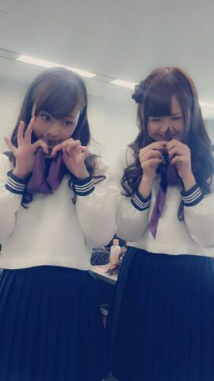

ほっほーーい☆
まひろ茶だよ `・ω・)/
センター試験だねぇ〜 ニヤ
センター試験だねぇ〜ニヤリ
(*￣ー￣)。
この時期は
皆色々と大変だよねっ ! !
受験生の皆っ ))))
頑張って頑張ってえっ (/・▽・)/★
ろってぃ- 全力で
皆こと応援しているよっ !
大好きだからw
大事だからw
最後まで 本当やりきって
ほしいと思ってます ☆!
君たちなら絶対大丈夫さっ //
お弁当
あ 間違った ^^
お勉強大変でしょお?
そしたらたまには
こんな写メでも見て
元気だしてえっ ! !
パワー注入w biri biri ☆

トマトはダメよ...(・ε・)
てだけ持って笑ってるだけ...
可愛いだけだぉ。
ちゃんとまひろみたいに
お鼻に パワー注入しないとっ ...
あ、ちゃう 笑 ??
あ でも まひろ この写メ
すごいお気に入りなんだあっ
(*´ω`*)♪
よくコメントで
『ろってぃのblog読んで
元気でたー。』
とか書いてくださってますけど
まひろそれ めっちゃ
嬉しいんですよねーっ(/> <)/ ♪
ありがとーございます
ありがとーございますっ
☆☆☆てへっ/
明日も皆が笑顔になってくれる様な
写メを 載せようと思ってます♪
1/20発売の 『mina』と
言う 女性ファッション雑誌に
まひろ と あすかが掲載
されているので
是非見てください (^o^)/
後ろらへんのページだと
思いますっ ^^/
本屋さん行ったら
もうおいてたよん (´▽`)♪
最後に、、
先週の乃木どこ?
まひろ出てたの見たかなぁ(´・ω・?
明日の乃木どこ?でも
まひろ何か歌うはずだよおっ(*^^*)
見てねんっ♪
あ、あと今日のblogに
書きたかったんだけど
これ以上書くと
長くなっちゃうねっ(*・▽・*)
あれだよ♪あれ、
行ってきたよっ (〃ゞ〃)...
また明日書くねんっ )))
ではでは 明日は朝からお仕事
頑張ってきます (〃ω〃)
その後レッスンもあるや /
大好きぃ〜(*^^*)
Rottyより,のし。